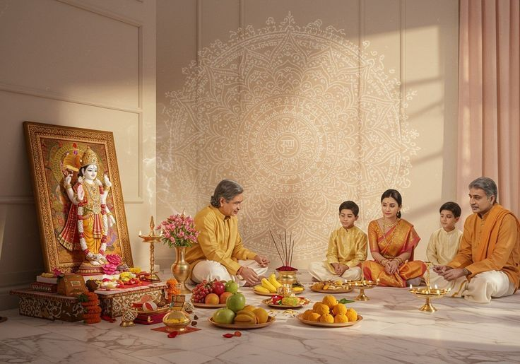

Invite Devotion and Gratitude with Satyanarayan Katha
Arrange a devotional Satyanarayan Katha with Upasana for a family occasion, a new beginning or a personal act of worship. Discuss the Panditji, puja format and katha requirements in advance.

About Satyanarayan Katha
Satyanarayan Puja is a devotional worship of Lord Vishnu in his Satyanarayan form. Families commonly perform it on special occasions or as an expression of gratitude and devotion.
The katha, offerings and sequence can vary according to family practice and the Panditji's guidance. Upasana helps you coordinate all aspects so your ceremony reflects your traditions with care.
Begin with sankalp and customary prayers as per family tradition.
Preparations and invocations may be performed according to the chosen vidhi.
Offer prayers and customary offerings to Lord Satyanarayan with devotion.
Recitation of the traditional katha in the selected language or format where available.
Prasad such as sheera may be part of the family's custom; confirm preparation responsibilities.
Conclude with aarti, prayers and prasad distribution.
Puja / Service Details
Everything for Your Puja
We help you coordinate the service details so you can prepare with clarity:
- Coordinate katha format and language preference
- Discuss samagri and prasad arrangements
- Plan venue, date and ceremony schedule
- Clarify package scope before confirmation
Final inclusions, availability, pricing, duration and any customer-provided items will be confirmed before booking.
Why Choose Upasana?
Katha and puja coordinated according to your family's customs.
Katha available in your preferred language, subject to Panditji availability.
All inclusions discussed and confirmed before the ceremony day.
Service tailored to your location, date and specific preferences.
It depends on the puja format, katha recitation and family arrangements. Confirm the expected duration when booking.
Share your preferred language during enquiry; availability will be confirmed based on Panditji.
Please confirm whether prasad ingredients and preparation are part of your chosen arrangement before booking.
Arrange Your Satyanarayan Katha
Let Upasana help you plan your Katha ceremony with care. Share your date, location, language and requirements.